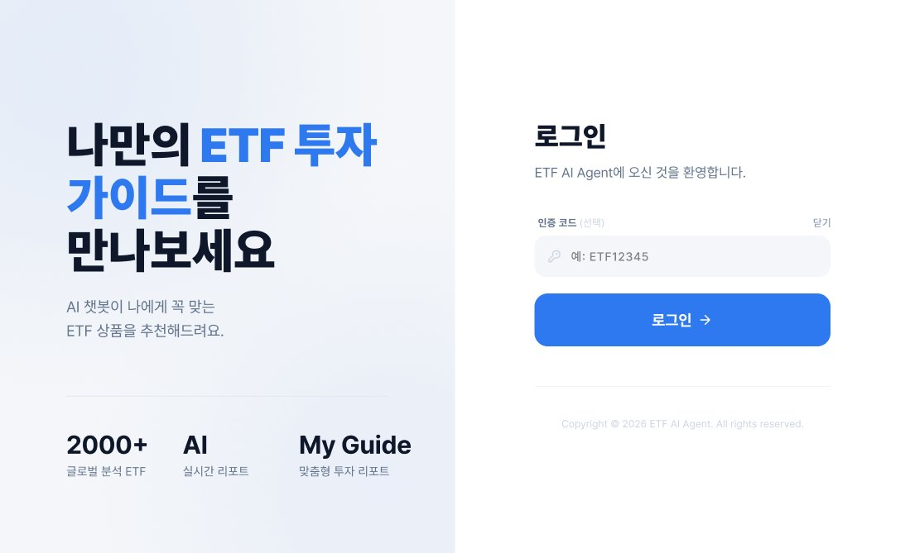
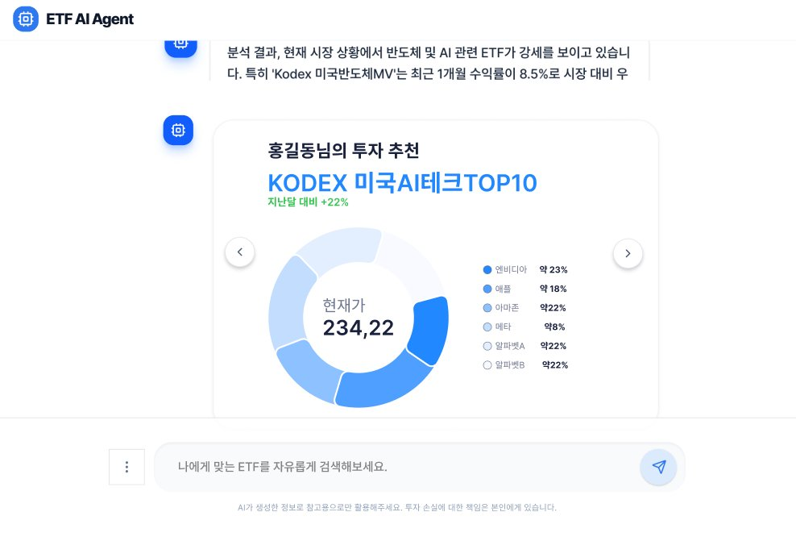

투자 목적만으로 ETF를 찾는 AI 에이전트의 서비스 기획을 전담해 의도분류 정확도 93%로 사내 배포까지 마쳤습니다.
기여도
서비스 기획 총괄주도 5건, 협업 1건
역할
서비스 기획 전담
발주
삼성자산운용
기간
2026.04 ~ 2026.07
역할 및 기여도
- [주도]IA와 사용자 플로우 설계100%
- [주도]에이전트 페르소나와 대화 시나리오100%
- [주도]채팅 UI, 차트 위젯, 인터랙션 설계100%
- [주도]어드민 기획100%
- [주도]품질 및 성능테스트 결과 보고서100%
- [협업]디자인 컴포넌트 퍼블리싱50%
[주도] 직접 책임지고 수행 / [협업] 다른 담당자와 함께 수행. 오른쪽 숫자는 해당 과업에서 본인 비중
성과
- 93%질문 의도분류 정확도
- 90%최종 답변 정상률
- 1.9만 회LLM 자동 평가로 모델 선정
문제와 해결
기존 문제설계한 해결
- 상품명이나 코드를 알아야 검색 가능“수익률 높은 IRP용 ETF”처럼 목적으로 질문
- 비교하려면 여러 페이지를 반복 탐색카드, 표, 차트로 한 번에 비교 답변
- 투자자와 마케터에게 필요한 답이 다름사용자별 진입, 권한, 답변 정책 분리
진행 방식
S1 IA와 대화 설계→S2 데이터→S3 에이전트 코어→S4 마케터용 분리→S5 LLM 평가→S6 품질 검증과 배포
2주 단위 스프린트 6회, 2026.04.20 ~ 07.10
작업물


산출물
- 서비스 기획 완료보고
- IA와 화면설계
- 대화 시나리오
- 어드민 기획서
- 품질 및 성능 평가 보고서